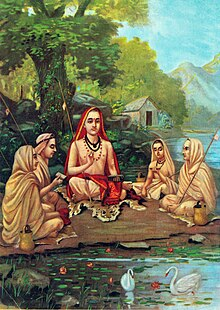
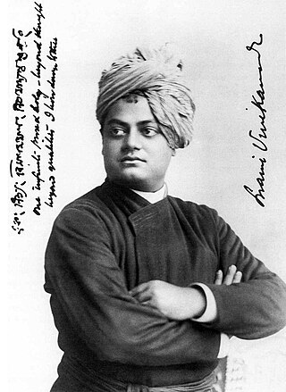

PHILOSPHERS

Adi Shankara also called Adi Shankaracharya (Sanskrit: आदि शङ्कर, आदि शङ्कराचार्य, romanized: Ādi Śaṅkara, Ādi Śaṅkarācārya, lit.
First Shankaracharya',[note 2] pronounced [aːdɪ ɕɐŋkɐraːt͡ɕaːrjɐ]),[note 3] was an Indian Vedic scholar and teacher (acharya).[1] His works present a harmonizing reading of the sastras, with liberating knowledge of the self at its core, synthesizing the Advaita Vedanta teachings of his time.[2][web 1]
Due to his later fame, over 300 texts are attributed to him, including commentaries (Bhāṣya), introductory topical expositions (Prakaraṇa grantha) and poetry (Stotra).[3][4] However, most of these are likely to be written by admirers or pretenders or scholars with an eponymous name.[5][6] Works known to be written by Shankara himself are the Brahmasutrabhasya,[3] his commentaries on ten principal Upanishads,[3][5] his commentary on the Bhagavad Gita,[7] and the Upadeśasāhasrī.[8][9] The authenticity of Shankara being the author of Vivekacūḍāmaṇi has been questioned and mostly rejected by scholarship.[10][11]
The central concern of Shankara's writings is the liberating knowledge of the true identity of jivatman (individual self) as Ātman-Brahman,[9][12] taking the Upanishads as an independent means of knowledge, beyond the ritually-oriented Mīmāṃsā-exegesis of the Vedas.[13][14][note 4][note 5] Shankara's Advaita shows influences from Mahayana Buddhism, despite Shankara's critiques;[15][16] and Hindu Vaishnava opponents have even accused Shankara of being a "crypto-Buddhist,"[17][18][19][note 6] a qualification
Shankaracharya',[note 2] pronounced [aːdɪ ɕɐŋkɐraːt͡ɕaːrjɐ]),[note 3] was an Indian Vedic scholar and teacher (acharya).[1] His works present a harmonizing
1002
1203
ADI SHANKARA MOVIES
adi shankara fillms
adi shankara fillms
SamkhyaYogaNyayaVaisheshikaMimamsaVedanta
SWAMI VIVEKANDHA

ABOUT SWAMI VIVEKANADHA
Swami Vivekananda (/ˈswɑːmi ˌvɪveɪˈkɑːnəndə/; Bengali: [ʃami bibekanɔndo] ⓘ; IAST: Swāmī Vivekānanda ; 12 January 1863 – 4 July 1902), born Narendranath Datta (Bengali: [nɔrendronatʰ dɔto]), was an Indian Hindu monk, philosopher, author, religious teacher, and the chief disciple of the Indian mystic Ramakrishna.[4][5] He was a key figure in the introduction of Vedanta and Yoga to the Western world,[6][7][8] and the father of modern Indian nationalism who is credited with raising interfaith awareness and bringing Hinduism to the status of a major world religion.[9]
Born into an aristocratic Bengali Kayastha family in Calcutta, Vivekananda was inclined from a young age towards religion and spirituality. He later found his guru Ramakrishna and became a monk. After the death of Ramakrishna, Vivekananda extensively toured the Indian subcontinent acquiring first-hand knowledge of the living cond
EDUCATION
college institution
college institution
QUOTE
"Arise, awake, and stop not till the goal is reached"
(more on Wikiquote)"
CHANAKYA

The legend of Chanakya and Chandragupta is detailed in the Pali-language Buddhist chronicles of Sri Lanka. It is not mentioned in Dipavamsa, the oldest of these chronicles.[11] The earliest Buddhist source to mention the legend is Mahavamsa, which is generally dated between fifth and sixth centuries CE. Vamsatthappakasini (also known as Mahvamsa Tika), a commentary on Mahavamsa, provides some more details about the legend. Its author is unknown, and it is dated variously from sixth century CE to 13th century CE.[12] Some other texts provide additional details about the legend; for example, the Maha-Bodhi-Vamsa and the Atthakatha give the names of the nine Nanda kings said to have preceded Chandragupta.[11][13]
Jain version
The Chandragupta-Chanakya legend is mentioned in several commentaries of the Shvetambara canon. The most well-known version of the Jain legend is contained in the Sthaviravali-Charita or Parishishta-Parvan, written by the 12th-century writer Hemachandra.[1] Hemachandra's account is based on the Prakrit kathanaka literature (legends and anecdotes) composed between the late first century CE and mid-8th century CE. These legends are contained in the commentaries (churnis
12212... 2312
QUOTE OF CHANAKYA
Before you start some work, always ask yourself three questions - Why am I doing it, What the results might be and Will I be successful. ...